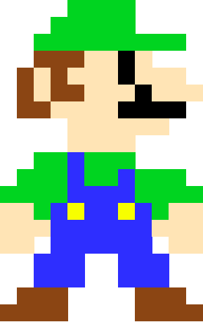

Zadanie 1
| Bohater 1 |
Bohater 2 |
Bohater 3 |
| Mario |
Luigi |
Ty |
| 26 lat |
26 lat |
? |
Mario has starred in over 200 games.
Naglowek 1 - Mario
"It's me, Mario!

!!YOUTUBE!!
Niewiele jest gier, istniejących w zbiorowej świadomości przez dziesięciolecia
i łączących różne pokolenia. Jedną (jak nie jedyną!) z takich jest gra
Super Mario która w tej dziedzinie zajmuje specjalne miejsce.
Naglowek 2
tresc 2

!!MEME!!
Najprawdopodobniej nie ma takiej osoby na świecie, która nie słyszałaby
o włoskim hydrauliku w kombinezonie, który ma na imię Mario.
Zapewne znajdzie się ktoś, kto nigdy nie zagrał w tę grę i nie jest świadomy
jej skromnych początków, ale, tak czy inaczej, słyszał o samym Mario.
Naglowek 3
It's me, Luigi

LUIGI INTERCONTINENTAL
W swoim debiutowym występie Mario nawet nie był główną postacią gry.
Do tego nawet nie był hydraulikiem i nie miał na imię Mario.
Po raz pierwszy pojawił się w 1981 roku w przełomowej dla tych czasów
grze zręcznościowej „Donkey Kong”. Postać miała na imię Jumpman i była stolarzem
Listy:
- pierwszy element listy wyponktoanej numerowanej
- drugi element listy wyponktoanej numerowanej
- trzeci element listy wyponktoanej numerowanej
- pierwszy element bullet listy
- pierwszy element bullet listy
- pierwszy element bullet listy
Pozostałe 4 elementy formatujące html:
pochylenie
przekreślony
indeksdolny